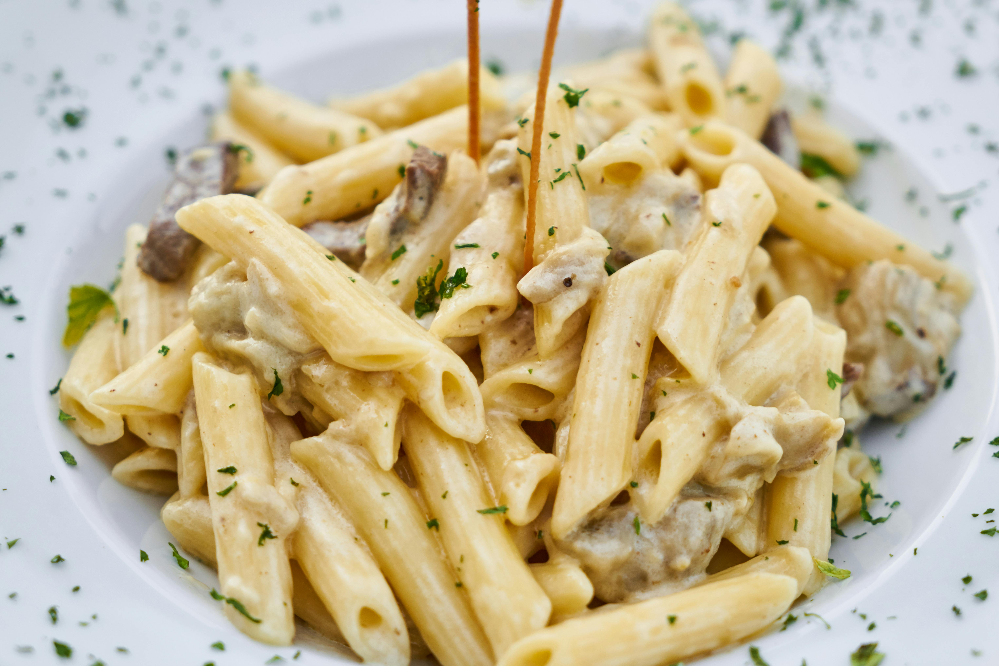

Pasta (Creamy Style)

Description
This pasta dish uses short pasta shapes like penne or fusilli, coated in a creamy sauce. It is rich, indulgent, and versatile—perfect for adding vegetables or chicken for extra flavor.
Ingredients:
- 250g penne pasta
- 2 tbsp butter
- 2 tbsp flour
- 2 cups milk
- 1/2 cup grated Parmesan cheese
- Salt and pepper to taste
- Optional: Cooked chicken or sautéed vegetables
Steps
- Cook pasta in boiling salted water until al dente, then drain.
- In a saucepan, melt butter over medium heat. Stir in flour and cook for 1-2 minutes until lightly golden.
- Gradually whisk in milk, cooking until the sauce thickens.
- Stir in Parmesan cheese, and season with salt and pepper.
- Toss the cooked pasta in the sauce until well coated. Add cooked chicken or vegetables if desired.
Enjoy your creamy pasta dish, perfect for a comforting meal!
Home